Tron arcade restoration and conversion
Wednesday, October 23, 2013
Back in July, I picked up an old 2-player Tron arcade cocktail machine that I wasn’t really sure what to do with. Although I loved the Disney Tron movie, I’ve always thought that the Midway arcade game, well, sucked. But Midway cocktail arcade tables are well built and hard to find, so I thought that I’d figure out what to do with it later.
The picture at the top of this post is the finished machine, but it took a while to get it done. All-in-all, I’m actually quite pleased with how it turned out, but it took a long time for me to decide what I actually wanted to do with it.
The wood veneer was in surprisingly good shape for it’s age, but the machine didn’t have the underlay that goes under the glass, and the monitor had a ton of screen burn-in and needed new capacitors. The vinyl overlay was worn, but the two metal control panels were in excellent shape - and although Tron used a spinner on the left and a small joystick on the right, the joystick hole just happened to be perfectly drilled in the metal for a standard-sized pushbutton:

What that meant is that I could easily replace the spinner on the left with a joystick and then have a single pushbutton on the right for firing - that would work well for most classic games available on a 60-in-1 multicade board. So, I was thinking of either making it a Tron multicade arcade, or do something cool, like get custom Polybius artwork printed up and totally convert it to a Polybius multicade arcade machine!
So, first things first, I restored the two control panels by removing the old vinyl, sanding the glue off and putting on a fresh new black vinyl cover. Then I installed a red “glow ball” joystick and pushbutton as well as put back the original two 1cm start buttons (no drilling into the metal control panel required!):
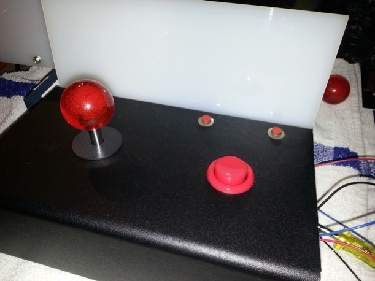
The second control panel was identical to the first, but I just covered the two 1cm holes used for the 1P and 2P start buttons with vinyl (they normally aren’t needed). Then I got to work on the cabinet.....
The first thing I noticed on the inside of the cabinet was the serial number affixed above the coin door:
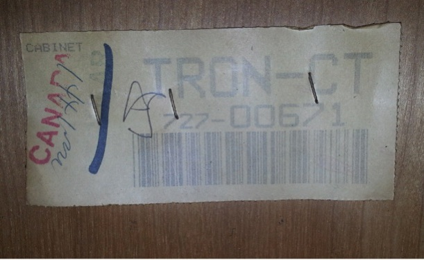
I carefully removed it, had it laminated, and stuck it back in place when everything was done.
Next, I removed everything, sanded and repainted all black metal parts, and polished any shiny metal parts. Next, I cleaned, sanded and coated the inside of the cabinet with bright orange enamel. This makes components easier to see and makes the cabinet just as nice to look at inside as outside:
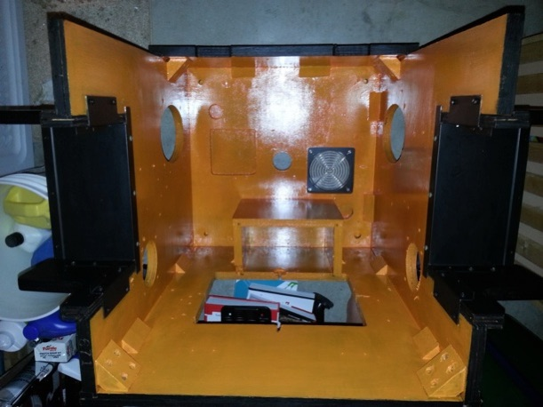
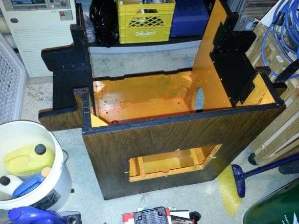
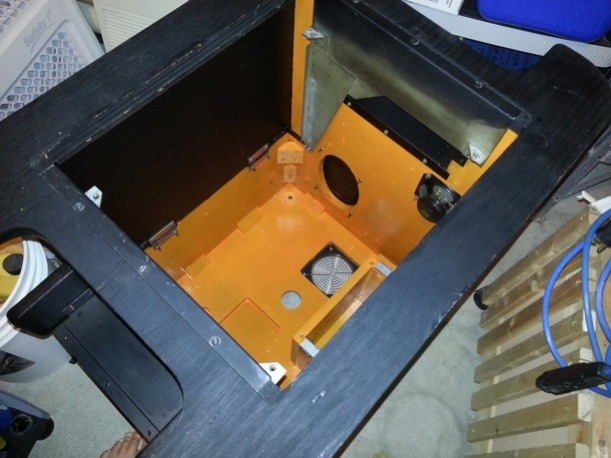
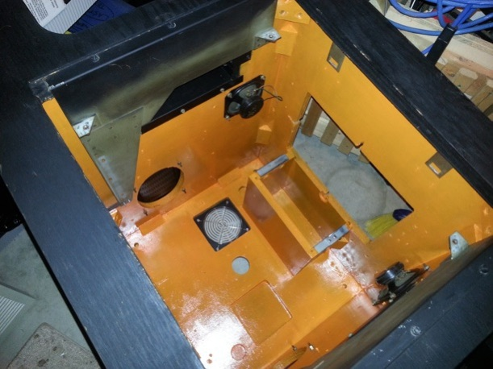
Next, I restored the coin door. This wasn’t too hard since it was is fairly good shape - I just needed to disassemble, clean and polish the metal parts, powder coat the front of the door, and install the coin mechanisms:
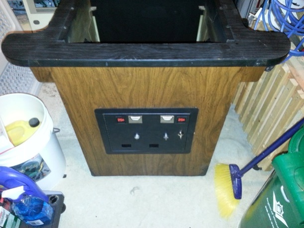
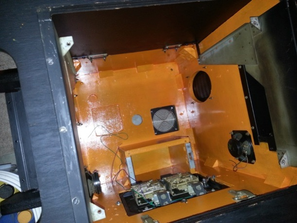
Rather than put the old CRT (TV) monitor back in, I simply installed a new 21” LED monitor that fit nice and snug - I affixed it to a plywood base that I bolted into the old CRT mounts, and covered it with a piece of frosted plexi with a nice vinyl border to match the display area:
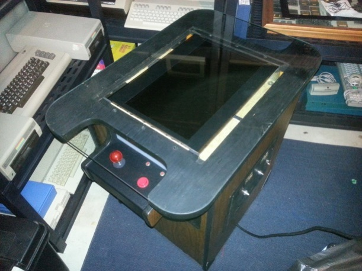
At this point, it was still early August, and I wasn’t comfortable making it into a multicade machine. So it sat in my basement for almost 2 months while I pondered what to do with it.
Then a few things fell into place. First, I managed to get a free original vinyl Tron underlay from a guy on the CGCC (Classic Game Collectors Canada) forums. Second, I managed to buy a Ms. Pac-man/Galaga 20th Reunion (Class of ’81) arcade PCB for a reasonable price (click here to see my earlier post about it). I’ve wanted one of these for a while because they have a continue feature you can’t get with regular Pac-man/Ms. Pac-man/Galaga, but they usually go for over $300 (way too much for any PCB). They also require two sets of start buttons (1P/2P for Ms. Pac-man and 1P/2P for Galaga). Wait a second! Both of the control panels on the Tron cocktail were drilled identically, so the first side could have 1P Ms. Pac-man and 1P Galaga, and the second side could have 2P Ms. Pac-man and 2P Galaga if I just install two more 1cm start buttons!
So that is what I did. To wire it up, I first installed a new piece of plywood. Then I mounted a new HAPP power supply, the Class of ’81 PCB (red), and a CGA-to-VGA converter card to it so that the Class of ’81 PCB video output would work with the 21” LED monitor. Then I installed a new JAMMA wiring harness and cabled it to all the components:

Then I fired it up and played some games! But there was a problem. The “glow ball” joysticks were too sensitive to play properly in later levels of Pac-man and Ms. Pac-man. Plus, they sat pretty high, so when you took your hand off the joystick, you often hit it on the glass above.
No problemo......the Playdium Store in Toronto sells official replacement Class of ’81 joysticks for $30 that sit much lower, and were designed specifically for these games! So I picked up two of those and installed them:
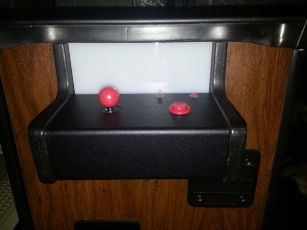
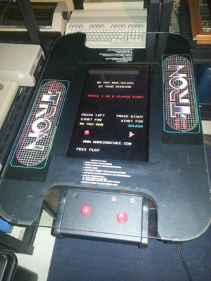
Now it plays perfectly! And I’m very very happy with how it turned out. I’ve wanted a Class of ’81 arcade machine for a while, but they usually go for $2000-$2500 used because they are still considered huge moneymakers to businesses. Now I have one, and it didn’t cost me an arm and a leg.
And the cabinet is perfect for it. I like that I’ve kept the cabinet Tron-themed, but upgraded it to run as a Class of ’81 arcade, so that I’ll actually spend lots of time playing it. In fact, I’ve been on vacation all week, and I’ve been playing it for several hours each day ;-)
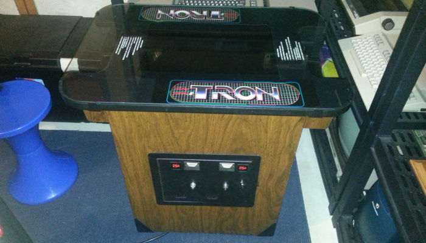